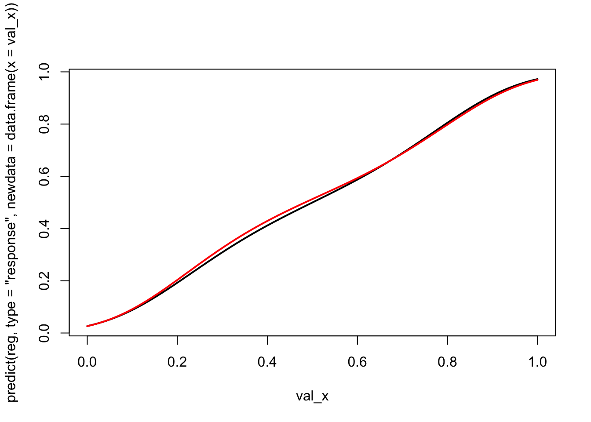

In this chapter, we provide some codes to simulate a dataset with a binary variable for which the underlying probability follows a targeted distribution. We consider here, as an example, that we would like the true probabilities to follow a Beta(2,2) distribution.
Code Availability
The functions used to subsample from a dataset so that the true probabilities in that subsample follows a target distribution are saved in the functions/subsample_target_distrib.r.
library(ks)library(tidyverse)
── Attaching core tidyverse packages ──────────────────────── tidyverse 2.0.0 ──
✔ dplyr 1.1.4 ✔ readr 2.1.5
✔ forcats 1.0.0 ✔ stringr 1.5.1
✔ ggplot2 3.5.1 ✔ tibble 3.2.1
✔ lubridate 1.9.3 ✔ tidyr 1.3.1
✔ purrr 1.0.2
── Conflicts ────────────────────────────────────────── tidyverse_conflicts() ──
✖ dplyr::filter() masks stats::filter()
✖ dplyr::lag() masks stats::lag()
ℹ Use the conflicted package (<http://conflicted.r-lib.org/>) to force all conflicts to become errors
2.1 Algorithm
In our generated sample, \(\mathcal{D}=\{(\boldsymbol{x}_i,y_i,{s}_i),i\in\{1,\cdots,n\}\}\), let \(\widehat{f}\) denote the (empirical) density of scores. For the various scenarios, suppose that we want a specific distribution for the scores, denoted \(g\) (uniform, Beta, etc.). A classical idea is to use ‘’rejection sampling’’ techniques to create a subsample of the dataset. Set \[
c = \sup_{s\in(0,1)} \frac{\widehat{f}(s)}{g(s)} \leq \infty.
\] If \(c\) is finite, and not too large, we can use the standard rejection technique, described in Algorithm 2.1. In a nutshell, point \(i\) is kept with probability \((cg(s_i))^{-1}\widehat{f}(s_i)\).
\begin{algorithm} \caption{Subsample a dataset so that the distribution of scores has density $g$ (Rejection, $c$ small)} \begin{algorithmic} \Require $\mathcal{D}=\{(\boldsymbol{x}_i,y_i,{s}_i),i\in\{1,\cdots,n\}\}$ and $g$ (target density) \State $\mathcal{I} \gets ,i\in\{1,\cdots,n\}$ \State $\widehat{f} \gets$ density of $\{({s}_i),i\in\mathcal{I}\}$, using Chen (1999) \State $c = \displaystyle\sup_{s\in(0,1)} \frac{\widehat{f}(s)}{g(s)} \gets \max_{i=1,\cdots,n}\displaystyle\frac{\widehat{f}(s_i)}{g(s_i)} $ \For{$i\in\{1,\cdots,n\}$} \State $U \gets \mathcal{U}([0,1])$ \If{$\displaystyle U > \frac{\widehat{f}(s_i)}{c\,g(s_i)}$} \State $\mathcal{I} \gets \mathcal{I}\backslash\{i\}$ , i.e. ``reject" \EndIf \EndFor \State $s\mathcal{D}=\{(\boldsymbol{x}_i,y_i,{s}_i),i\in\mathcal{I}\}$ \end{algorithmic} \end{algorithm}
If \(c\) is too large, we use an iterative algorithm, described in Algorithm 2.2, inspired by Rumbell et al. (2023) (alternative options could be the ‘’Empirical Supremum Rejection Sampling’’ introduced in Caffo, Booth, and Davison (2002), for instance)
\begin{algorithm} \caption{Subsample a dataset so that the distribution of scores has density $g$ (Iterative Rejection, $c$ large)} \begin{algorithmic} \Require $\mathcal{D}=\{(\boldsymbol{x}_i,y_i,{s}_i),i\in\{1,\cdots,n\}\}$, $\epsilon>0$ and $g$ (target density) \State $\mathcal{I} \gets \{1,\cdots,n\}$ \State $\widehat{f} \gets$ density of $\{({s}_i),i\in\mathcal{I}\}$, using Chen (1999) \State $d \gets \|\widehat{F}-G\|_{\infty}$ (Kolmogorov-Smirnov distance) \While{$d>\epsilon$} \State $\mathcal{J} \gets \mathcal{I}$ \For{$i\in\mathcal{I}$} \State $U \gets \mathcal{U}([0,1])$ \If{$\displaystyle U>\frac{\widehat{f}(s_i)}{g(s_i)}$} \State $\mathcal{J} \gets \mathcal{J}\backslash\{i\}$ , i.e. 'reject' observation $i$ \EndIf \EndFor \State $\mathcal{I} \gets \mathcal{J}$ \State $\widehat{f} \gets$ density of $\{({s}_i),i\in\mathcal{I}\}$ \State $d \gets \|\widehat{F}-G\|_{\infty}$ \EndWhile \State $s\mathcal{D}=\{(\boldsymbol{x}_i,y_i,{s}_i),i\in\mathcal{I}\}$ \end{algorithmic} \end{algorithm}
To implement this, we define the subset_target() function.
#' @param data dataset#' @param score_name name of the column in data that contains the scores#' @param target_fun target distribution function.#' @param iter number of iterations.#' @param draw if TRUE (default) the distribution of scores (gray bars) and the#' target distribution (in red) are plotted at each iteration.#' @seed if not `NULL`, seed to use#' @param data dataset#' @param probs_name name of the column in data that contains the observed#' probabilities#' @param target_fun target distribution function.#' @param iter number of iterations.#' @param draw if TRUE (default) the distribution of scores (gray bars) and the#' target distribution (in red) are plotted at each iteration.#' @seed if not `NULL`, seed to use#' @param verbose if `FALSE`, size of subsamplings at each iteration and KS test#' results are hiddentsubset_target <-function(data, probs_name,target_fun =function(x) dbeta(x,2,2),iter =1,draw =TRUE,seed =NULL,verbose =TRUE){ select <-rep(nrow(data),iter +1)if (!is.null(seed)) set.seed(seed)# Get the scores from the dataset probs_01 <- data |>pull(!!probs_name)if (verbose ==TRUE) cat("1) Size ...... ", nrow(data), "\n", sep ="")# Kolmogorov-Smirnov Test fun <-Vectorize(function(x) integrate(target_fun, 0, x)$value) K <-ks.test(probs_01, fun)if (verbose) {cat("1) ks ............ ", K$statistic, "\n", sep ="")cat("1) (pvalue) ...... ", K$p.value, "\n", sep ="") }if (draw) {# Histogram of scores (gray) and target distribution (red)hist(probs_01,probability =TRUE, xlab ="", ylab ="", main ="Initial") val_x <-seq(0,1,length =601)lines(val_x,target_fun(val_x), col ="red") } data_subset <- datafor (k in1:iter) { n <-nrow(data_subset) initial_density <-kde(x = probs_01, eval.points = probs_01)# Probability to include each observation in the current subset prob_acceptation <-target_fun(probs_01) / initial_density$estimate prob_acceptation <-pmin(prob_acceptation /max(prob_acceptation), 1)# For each scores from the current data subset, decide whether or not to# include it based on a random draw from a Ber(prob_acceptation) index_acceptation <-rbinom(n, size =1, prob = prob_acceptation)# Use this index to keep only the selected data data_subset <- data_subset[which(index_acceptation ==1 ), ] select[k +1] <-nrow(data_subset) probs_01 <- data_subset |>pull(!!probs_name)if (verbose ==TRUE)cat(k +1, ") Size ...... ", nrow(data_subset), "\n", sep ="")# Kolmogorov-Smirnov Test K <-ks.test(probs_01, fun)if (verbose) {cat(k +1, ") ks ............ ", K$statistic, "\n", sep ="")cat(k +1, ") (pvalue) ...... ", K$p.value, "\n", sep ="") }if (draw) {hist( probs_01, probability =TRUE, xlab ="", ylab ="",main =paste("Iteration ", k) ) val_x <-seq(0, 1, length =601)lines(val_x, target_fun(val_x), col ="red") } } data_subset}
2.2 First Example
Let us begin with generating some binary data, using a linear predictor for the true probability.
n <-1e5# Number of obs.# Covariatesx1 <-rnorm(n)x2 <-rnorm(n)# True probabilitiesp <-function(x1, x2) .4* x1 - .2*x2# Observed eventy <-rnorm(n,p(x1, x2), .4)tb <-tibble(y = y, x1 = x1, x2 = x2)
Let us consider a linear model to predict the observed event:
Warning in bs(x, degree = 3L, knots = numeric(0), Boundary.knots =
c(1.13039405272881e-06, : some 'x' values beyond boundary knots may cause
ill-conditioned bases
lines( val_x,predict(reg2, type ="response", newdata =data.frame(x = val_x)),type ="l", lwd =2, col ="red")
Warning in bs(x, degree = 3L, knots = numeric(0), Boundary.knots =
c(0.00521055325908034, : some 'x' values beyond boundary knots may cause
ill-conditioned bases

Caffo, Brian S, James G Booth, and AC Davison. 2002. “Empirical Supremum Rejection Sampling.”Biometrika 89 (4): 745–54.
Chen, Song Xi. 1999. “Beta Kernel Estimators for Density Functions.”Computational Statistics & Data Analysis 31 (2): 131–45.
Rumbell, Timothy, Jaimit Parikh, James Kozloski, and Viatcheslav Gurev. 2023. “Novel and Flexible Parameter Estimation Methods for Data-Consistent Inversion in Mechanistic Modelling.”Royal Society Open Science 10 (11): 230668.